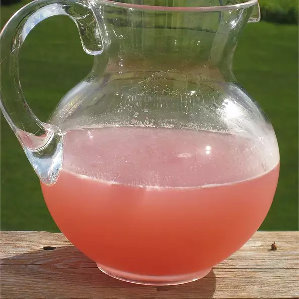

Summer Beer II
Back to Main Directory

Fun to serve in the summer for special gatherings or cocktail parties. Given to me from Dottie, a long time friend and sorority sister. Garnish with lemon slices and sprigs of mint.
_____
Ingredients
- 1 (12 fluid ounce) can frozen pink lemonade concentrate, thawed
- 12 fluid ounces water
- 12 fluid ounces vodka
- 1 (12 fluid ounce) can or bottle beer
Steps
- Place lemonade concentrate in a gallon pitcher.
- Measure water and vodka in the 12 ounce lemonade can and add to the pitcher.
- Pour in the beer, mix well and serve over ice.
Back to Main Directory